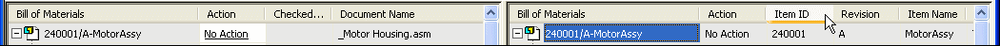
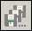
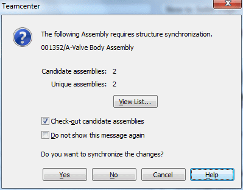

Activity: Use the Structure Editor
Try this activity to learn how to:
-
Open an assembly in Structure Editor.
-
Clone a complete assembly.
-
Revise an assembly component in Structure Editor.
-
Save and close the files in Structure Editor.
Instructions for loading the activity files are found in Activity data set and configuration requirements. The activities assume ISO templates are loaded.
-
Choose Start→Siemens Solid Edge 2023→Choose PDM Integration→Structure Editor.
From the Structure Editor startup screen, you can:
-
Sign in to Teamcenter.
-
Open an existing document.
-
Access Structure Editor help.
The status bar at the bottom of the screen describes commands and displays instructions.
-
Click Open Existing Document.
Since you are working in a managed environment, the Sign In to Teamcenter dialog box is displayed.
Sign in to Teamcenter.
The first time you access Teamcenter you must enter your Teamcenter User ID and Password, and select the appropriate database if more than one database is defined.
Click Sign In.
The Open a File dialog box is displayed.
In the Filter Options pane, set Files of Type to Assembly document (*.asm).
Open the Advanced Search pane.
Expand the Saved Searches list.
From the list of predefined searches, select Item Name.
To clear any existing search criteria, click Clear All  .
.
In the Item Name criteria field, type *valve body*.
The use of the asterisks indicates a wildcard search for any string of characters that includes valve body.
Click Search.
When completed, the Open a File dialog box displays the search results.
Select the assembly with the description of Completed Assembly.
A preview of the item is displayed in the Preview pane.
To open the file in the Structure Editor, click Open.
-
Notice that the Structure Editor screen is divided into four window panes.
-
The upper-left window pane displays a BOM view of your assembly using the Revision Rule you selected when you opened the item. It is the source pane.
-
The upper-right window pane initially displays your item in the same BOM view as the source pane. However, this pane reflects any changes you make to the item while in Structure Editor. It is the target pane.
-
The lower-left pane is the preview pane.
-
The lower-right pane is the properties pane.
Tip:In a multi-level assembly, you can expand each level using the + to the left of the item or you can use the Expand All shortcut command to expand all levels of the assembly.
-
In the source pane, right-click the assembly name and choose Expand All.
On the View menu, choose Preview.
On the View menu, choose Properties.
Select the horizontal divider between the top and bottom half of the Structure Editor window.
Drag the divider up. When you release the left mouse button, vertical scroll bars appear in the source and target window panes.
Use the vertical scroll bar to view the hidden contents of the assembly in the window panes.
The source and the target windows move in vertical synchronization with one another. This is especially helpful when you work on large assemblies.
-
At the top of the screen, from the Show View list, select Parts List.
The Parts List display is a flat listing of the components of the assembly.
-
In the Show View list box, select Indented Item-Rev.
In the target window pane, select the column heading Item ID and drag it to the left until the cell border of the Action column highlights.
Release the left mouse button to position the column.
Repeat the process for the Revision and Item Name columns.
Your display should resemble the following:

In common property dialog boxes such as the New Document dialog box, the Upload dialog box, Cache Assistant dialog box, and Open dialog box, you can reorder column display and use shortcut commands to hide columns or fit the column width to the contents.
In the target window pane, right-click the column heading for the Checked Out By column.
Click Columns.
Clear the check box beside the entry for Checked Out By and click OK.
In Structure Editor, the column manipulation commands operate independently in each window pane. So, the Checked Out By column is hidden in the target window pane, but visible in the source window pane.
-
In the source pane, select the top-level assembly and click Save As All

.Setting the assembly action to Save As All clones or copies all of the files within a structure to a new item number, revision number, and item name. As a result, cells in the Action column of the target window pane change. Each item in the cloned assembly has an action of Check In.
You must supply the required information of an Item ID, Revision, and Item Name for each item in the cloned assembly. You can type the information or have it generated for you.
-
In the Structure Editor toolbar, click Assign All
 to automatically assign an Item ID, Item Name, and Revision to the document.
to automatically assign an Item ID, Item Name, and Revision to the document.The Item ID is automatically assigned a unique value.
Tip:The Assign All command is also available from the shortcut menu.
In the source pane, select the row containing the item that is the handle cap.
Right-click and select Remove.
Notice the row is shown with a horizontal line through the center of the text in both panes. The Action is set to Remove for that item.
In the source window pane, select the top level assembly.
In the Structure Editor toolbar, click New
A new empty item is created as a component of the parent assembly. You may have to scroll to see it in the list.
In the target pane, right-click the new item and then click Assign.
Many times the items that comprise an assembly are stored in various folders. You can clone or copy items to a common folder for organizational purposes.
Scroll to the Folder column and double-click inside the Folder cell for the top-level assembly.
In the Select Destination dialog box, choose your Home folder.
Click OK.
Click the top-level assembly's Folder cell.
Press Ctrl + C to copy the contents to the clipboard.
Click the Folder cell for the next item in the list.
Press Ctrl + V to paste the contents of the clipboard into the cell.
Repeat pasting the contents of the clipboard into each cell until each cell displays the Home folder.
You can select multiple cells by selecting the first cell, holding down your Shift key, and then selecting the last cell.
In the source window pane, select the item with the Item Name of Stem.
On the main toolbar, click Where Used to determine if the part is used in other assemblies.
Changes to the item will affect each of the documents where it is used.
Cancel the Where Used Results dialog box.
In the source window pane, click the Action cell and set the action for the item named Stem to Revise.
In the target window pane, the new revision is automatically assigned for you.
Click Run Teamcenter Validations  to validate your changes.
to validate your changes.
When you are notified Teamcenter validations are complete, click OK.
Click Perform Actions  .
.
The Perform Actions command executes all actions specified in the Action column.
In the target pane, select the top level assembly and select File→Open in Editor.
The Structure Synchronization dialog box displays.

The dialog box notifies you when an assembly requires structure synchronization with Teamcenter. This condition occurs when an assembly is changed outside the Solid Edge environment.
Click Yes to synchronize the changes.
In PathFinder, verify the following:
-
A new empty item exists as part of the assembly.
-
The handle assembly no longer contains the handle cap.
-
The item that is the stem is now revision B.
Select File menu→Exit Solid Edge.
Click Yes to save the changes to the document.
-
From the Structure Editor toolbar, select Manage→Cache Assistant.
The Cache Assistant has the same functionality in Structure Editor as it does in a managed Solid Edge environment. You can use the Cache Assistant dialog box to synchronize all the documents in the managed library, check in documents you have checked out, download documents from the managed library to your local cache, filter the display of the contents of your cache, or clear documents from your local cache.
Click Check In  .
.
Update the status of the items in the cache by clicking Update Status Info  .
.
Click Delete All to remove all workspaces from the cache.
Deleting all workspaces from the cache checks in all checked-out documents, deletes from cache all of the local workspaces and associated documents and creates a new workspace named Default.
At the prompt, click OK to delete all workspaces from the cache.
Confirm the delete by clicking Yes.
The cache is cleared and a new Default workspace is created.
Close the Cache Assistant dialog box.
-
From the Structure Editor toolbar, select File→Exit.
-
Click the Close button in the upper- right corner of this activity window.
In this activity, you learned how to start Structure Editor and how to use basic operation commands. You learned how to clone assemblies and revise individuals parts within assemblies.
Now you will be able to:
-
Open any managed document in Structure Editor.
-
Clone an existing assembly.
-
Revise an individual part within an assembly.
-
You can use the Structure Editor to perform all of the following functions except:
a. Copy assembly structures to new Teamcenter items.
b. Revise partial assembly structures.
c. View an assembly in Indented-ItemRev, Exploded or Parts List format.
d. Print Teamcenter properties.
-
Name the four window panes that comprise the Structure Editor window.
-
What is the difference between the Revise Selected and Revise All commands?
-
True or False: You should not work in Solid Edge and Structure Editor simultaneously.
-
You can use the Structure Editor to perform all of the following functions except:
d. Print Teamcenter properties.
-
The four window panes that comprise the Structure Editor window are:
-
Source — contains the Bill of Materials used for markup.
-
Target — contains the final view of the Bill of Materials.
-
Preview — displays a saved preview image of the assembly.
-
Property — displays Teamcenter property information
-
-
The Revise Selected command revises selected files within a structure to a new revision. The Revise All command revises all the files within a structure to a new revision.
-
True — You should not work in Solid Edge and Structure Editor simultaneously.